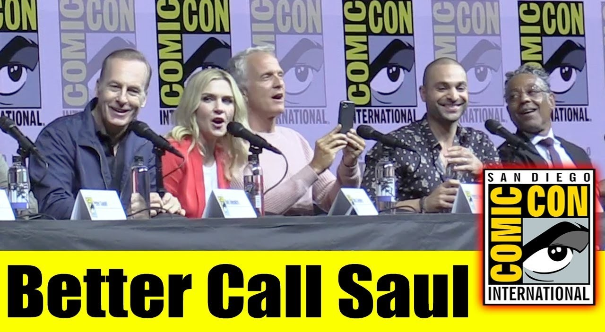

Eventos y Curiosidades
Eventos Especiales
- Paneles en convenciones como Comic-Con de San Diego.
- Exhibiciones de vestuario y escenografía de "Better Call Saul" en museos de cine y televisión.

Curiosidades
- Bob Odenkirk realizó muchas de sus propias escenas de acción.
- Muchos de los personajes secundarios de "Breaking Bad" tienen papeles importantes en "Better Call Saul", como Gus Fring, Hector Salamanca y los Salamanca Twins.
- Se ha considerado "Better Call Saul" como una de las pocas precuelas que iguala o incluso supera a su serie original en calidad según críticos.